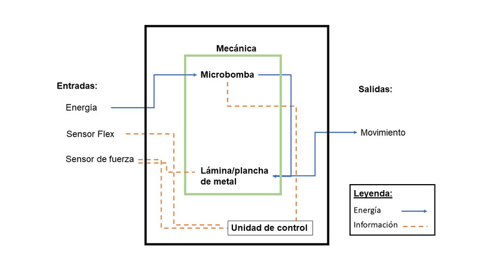
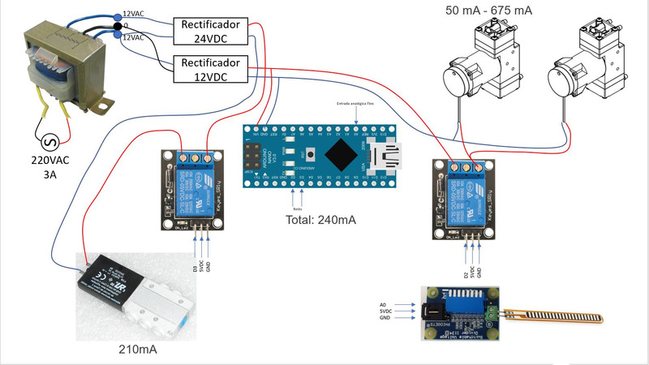

DISEÑO MODULAR DE LA PROPUESTA
DISEÑO MODULAR
 MATERIALES Y FUNCIONALIDAD
- 1 Microbomba LTC Diaphragm Pump, Brushless Motor: componente principal del sistema de fuerza. Nos brindará la presión necesaria para que nuestro actuador ejerza una fuerza de 15 a 19N.
- 1 Válvula Solenoide MHE2-MS1H-3/2G-M7 196131 FESTO: Regulará la presión y sus ciclos de apertura y cierre.
- 1 sensor de presión Honeywell Sensing and Productivity Solutions 40PC015V2A: sensará la presión de salida de la válvula.
- 1 FSR Sensor de Fuerza Resistivo Circular : sensará la fuerza ejercida por el actuador.
- 2 sensores de flexión fs-l-0055-253: uno activará o desactivará el funcionamiento del actuador y el segundo limitará el grado de flexión del mismo.
- 1 Arduino UNO: realizará todas las funciones de control de nuestro sistema.
- 1 batería 9V Duracell: otorgará la energía necesaria para activar nuestro dispositivo.
- 1 interruptor circular: encenderá o desactivará totalmente nuestro dispositivo.
- 1 metro de tubería transparente: sera parte del sistema neumático.
- 1 Cautin
- Juego de jumpers